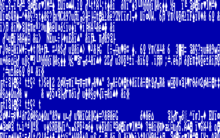

Blue screen of death
A stop error[1] or exception error,[2] commonly called the blue screen of death (BSoD) or blue screen, is an error screen displayed on Windows computers following a fatal system error. It indicates a system crash, in which the operating system has reached a condition where it can no longer operate safely. This is caused by many different problems, such as a general hardware failure or a crucial process terminating unexpectedly.
